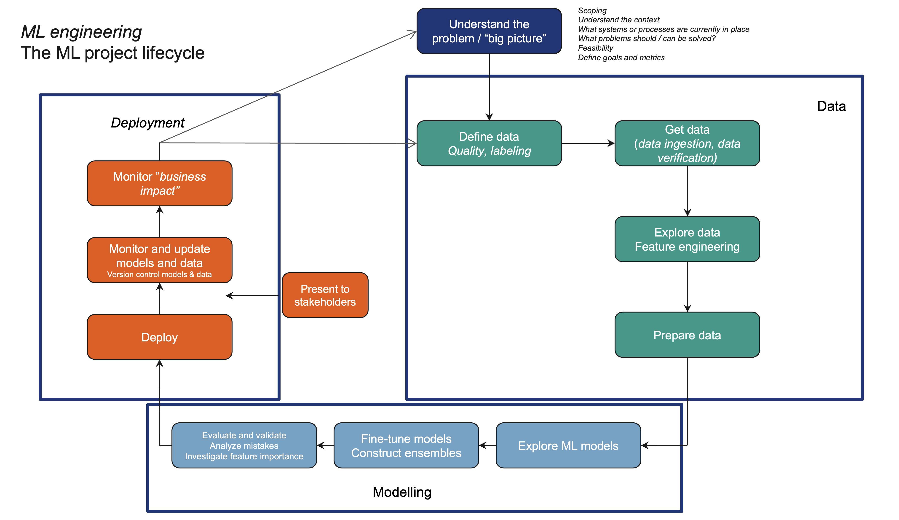
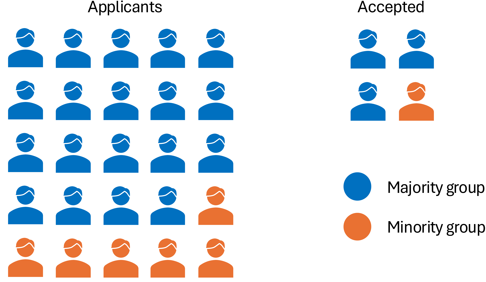
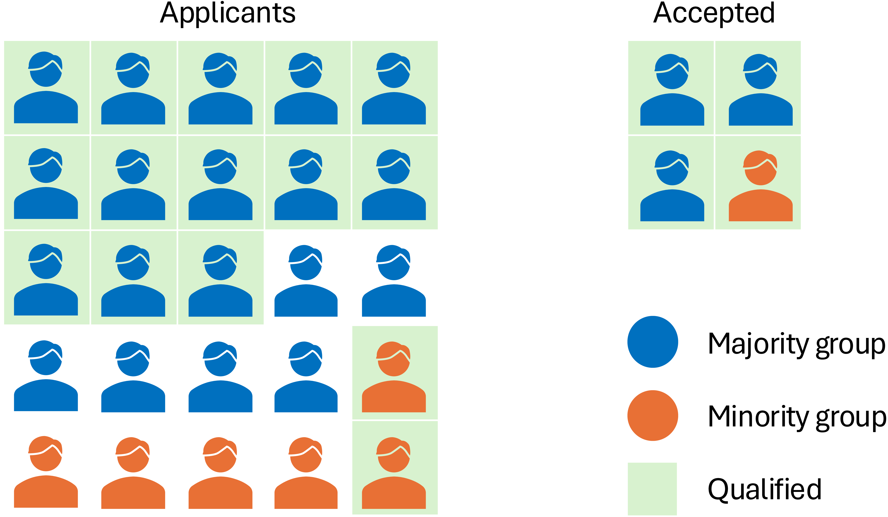

DAT158: Machine Learning Engineering and Advanced Algorithms
Module 3 - End-to-end machine learning product
Lecture 10
Topics for Module 3
Piecing together a complete ML-based system
We’ll go through Appendix A: Machine learning project checklist, and add some details on
- Project framing 🖼
- A bit about deployment 📦
- The ML project lifecycle ♻️
- Useful tools 🛠
- Mistakes to avoid 💣
More detailed picture: the ML project lifecycle

☑️ Checklist pt. 6: Fine-tune
Having made a ranking of good models, now is the time to optimise.
Run hyperparameter search (remember cross-validation)
Tools: Scikit-learn, Optuna, HyperOpt, Ray Tune
Maybe make an ensemble of the best models
Finally, evaluate performance on the test set
Verifying ML code
Unit tests:
Always a good idea (but less relevant when relying heavily on frameworks)
Integration tests:
Verify that each step of the pipeline gives expected output. Difficult due to random nature of many ML models
Improve reproduceability by always using same random numbers:
requires that you initialise model components in a fixed order)
Verify shapes rather than content
- Deployment tests:
- Verify functionality of the entire system
- Test scalability, stability, latency, etc
Verifying ML models
Testing code is one thing, but verifying the model output is something else.
Can’t feasibly check model output against all possible inputs
Two levels of testing:
“Simple” evaluation:
- Compute metrics on the test dataset
In-depth evaluation:
Diagnose model through explainability and interpretability techniques such as
- Feature importance
- Attribution methods
- Bias evaluation
Verifying data
An ML model is necessarily only as good as the data it is trained on.
Need to ensure data quality both for training and for inference
Useful to define a data schema restricting the domain of each feature, e.g.
- User age is between 18 and 99 years
- Patient is not
maleandpregnant - Apartment does not have more bathrooms than bedrooms
Verifying data: Bias and fairness
Bias is when we gather data or make predictions with a systematic tendency of presenting a skewed or inaccurate view of reality.
Failing to account for biases leads to unfair predictions for subgroups in data.
Some types of bias: (not a solid line between these)
- Reporting bias
- Coverage bias
- Sampling bias
Last week, 8% of hospital COVID-19 tests were positive.
What is the prevalence of COVID-19 in the general population?
Let’s do a survey on the importance of lectures.
*Asks students in the auditorium*
Election polls are typically results from ~1000 automatic phone calls to random recipients.
Do they correctly predict the winner?
(could we skip the election and just use the poll?)
Fairness
Adapted from Google Developers: Real-world ML
We want to build an ML model that accepts students to a university.
Admission should of course be fair between applicants from different groups, even though one group is in majority.
Model output:
Acceptance rate:
Blue group: 3/19 = 16%
Orange group: 1/6 = 17%
Seems fair.

Fairness
Adapted from Google Developers: Real-world ML
We also want to take into account if the applicants are qualified
(only accept those how are):
Model output:
Acceptance rate:
Blue group: 3/19 = 16%
Orange group: 1/6 = 17%
Acceptance rate of qualified applicants:
Blue group: 3/13 = 23%
Orange group: 1/2 = 50%

Cannot be fair on both group and subgroup/individual level at the same time :(
Verifying models: Feature importance
Quantify how much each input feature matters to the prediction
Verifying models: Feature importance
Quantify how much each input feature matters to the prediction
Feature importance
Quantify how much each input feature matters to the prediction
Feature importance
Quantify how much each input feature matters to the prediction

Feature importance
Quantify how much each input feature matters to the prediction
- For linear models, we can look at the parameter (coefficient) values
- For tree-based models, we can attribute reduction in Gini impurity as feature importance
- For models trained via gradient descent, we can compute how much a small change in input affects the output
- For any model, we can compute
- Permutation feature importance
Feature importance
Quantify how much each input feature matters to the prediction
- For linear models, we can look at the parameter (coefficient) values
- For tree-based models, we can attribute reduction in Gini impurity as feature importance
- For models trained via gradient descent, we can compute how much a small change in input affects the output
- For any model, we can compute
- Permutation feature importance
- Shapley values
Feature importance tells us something about the model, not necessarily about reality.